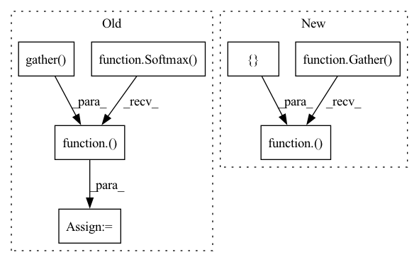

Pattern ID :11304

Before Change
h = Dropout(rate=dropout)(h)
h = GraphConvolution(self.n_classes, use_bias=use_bias)([h, adj])
h = tf.gather(h, index)
output = Softmax()(h)
model = Model(inputs=[x, adj, index], outputs=output)
model.compile(loss="sparse_categorical_crossentropy", optimizer=Adam(lr=lr), metrics=["accuracy"])
After Change
h = Dropout(rate=dropout)(h)
h = GraphConvolution(self.n_classes, use_bias=use_bias)([h, adj])
h = Gather()([h, index])
model = Model(inputs=[x, adj, index], outputs=h)
model.compile(loss=SparseCategoricalCrossentropy(from_logits=True),
optimizer=Adam(lr=lr), metrics=["accuracy"])
In pattern: SUPERPATTERN
Frequency: 3
Non-data size: 7
Instances
Fragment ID: 38460294
Project Name: edisonleeeee/graphgallery
Commit Name: 3ba050e6f03d41bd4c49a96b219845af426c1de1
Time: 2020-08-07
Author: cnljt@outlook.com
File Name: graphgallery/nn/models/semisupervised/gcn.py
M Class Name: GCN
N Class Name: GCN
M Method Name: build(7)
N Method Name: build(7)
M Parent Class: SemiSupervisedModel
N Parent Class: SemiSupervisedModel
M File Name: graphgallery/nn/models/semisupervised/gcn.py
N File Name: graphgallery/nn/models/semisupervised/gcn.py
M Start Line: 90
M End Line: 102
N Start Line: 91
N End Line: 102
'>
Before Change
h = Dropout(rate=dropout)(h)
h = DenseGraphConv(self.n_classes, use_bias=use_bias)([h, adj])
h = tf.gather(h, index)
output = Softmax()(h)
model = Model(inputs=[x, adj, index], outputs=output)
model.compile(loss="sparse_categorical_crossentropy", optimizer=Adam(lr=lr), metrics=["accuracy"])
self.model = model
After Change
h = Dropout(rate=dropout)(h)
h = DenseGraphConv(self.n_classes, use_bias=use_bias)([h, adj])
h = Gather()([h, index])
model = Model(inputs=[x, adj, index], outputs=h)
model.compile(loss=SparseCategoricalCrossentropy(from_logits=True),
optimizer=Adam(lr=lr), metrics=["accuracy"])
'>
Fragment ID: 38460292
Project Name: edisonleeeee/graphgallery
Commit Name: 3ba050e6f03d41bd4c49a96b219845af426c1de1
Time: 2020-08-07
Author: cnljt@outlook.com
File Name: graphgallery/nn/models/semisupervised/densegcn.py
M Class Name: DenseGCN
N Class Name: DenseGCN
M Method Name: build(7)
N Method Name: build(7)
M Parent Class: SemiSupervisedModel
N Parent Class: SemiSupervisedModel
M File Name: graphgallery/nn/models/semisupervised/densegcn.py
N File Name: graphgallery/nn/models/semisupervised/densegcn.py
M Start Line: 104
M End Line: 116
N Start Line: 105
N End Line: 116
'>
Before Change
h = GraphAttention(self.n_classes, use_bias=use_bias,
attn_heads=1, attn_heads_reduction="average")([h, adj])
h = tf.gather(h, index)
output = Softmax()(h)
model = Model(inputs=[x, adj, index], outputs=output)
model.compile(loss="sparse_categorical_crossentropy", optimizer=Adam(lr=lr), metrics=["accuracy"])
After Change
h = GraphAttention(self.n_classes, use_bias=use_bias,
attn_heads=1, attn_heads_reduction="average")([h, adj])
h = Gather()([h, index])
model = Model(inputs=[x, adj, index], outputs=h)
model.compile(loss=SparseCategoricalCrossentropy(from_logits=True),
optimizer=Adam(lr=lr), metrics=["accuracy"])
'>
Fragment ID: 38460293
Project Name: edisonleeeee/graphgallery
Commit Name: 3ba050e6f03d41bd4c49a96b219845af426c1de1
Time: 2020-08-07
Author: cnljt@outlook.com
File Name: graphgallery/nn/models/semisupervised/gat.py
M Class Name: GAT
N Class Name: GAT
M Method Name: build(8)
N Method Name: build(8)
M Parent Class: SemiSupervisedModel
N Parent Class: SemiSupervisedModel
M File Name: graphgallery/nn/models/semisupervised/gat.py
N File Name: graphgallery/nn/models/semisupervised/gat.py
M Start Line: 97
M End Line: 113
N Start Line: 98
N End Line: 113